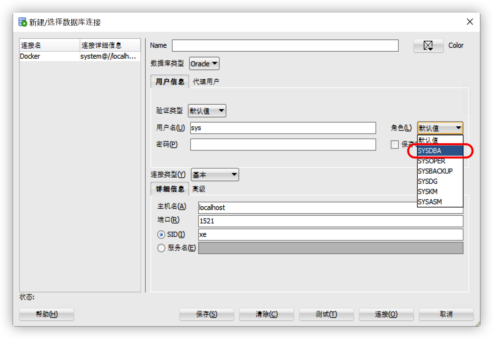

部分项目可能需要同时适配多种不同的数据库，比如常见的 Mysql、Oracle、Mssql 这几种数据库。首先我们准备测试数据库环境。
测试数据库准备
为了快速测试，我们使用 Docker 快速搭建数据库环境，对应的 Docker Compose 文件内容如下：
-
Mysql
1
2
3
4
5
6
7
8
9
10
11
12
13
14version: '2'
services:
mysql:
image: mysql:8.0.20
volumes:
- ./mysql/data/:/var/lib/mysql/
environment:
- MYSQL_USER=root
- MYSQL_ALLOW_EMPTY_PASSWORD=yes
- MYSQL_DATABASE=mysql
ports:
- 3306:3306
command: mysqld --lower_case_table_names=1 --skip-ssl --character_set_server=utf8mb4 --explicit_defaults_for_timestamp -
Oracle
1
2
3
4
5
6
7
8
9
10
11
12
13
14
15
16
17version: '3'
services:
oracle-db:
image: oracleinanutshell/oracle-xe-11g:latest
restart: always
volumes:
- ./mysql/data/:/u01/app/oracle/
environment:
- ORACLE_PWD=oracle # DB_CONN: credentials (system/sys:oracle)
- ORACLE_ALLOW_REMOTE=true
- ORACLE_DISABLE_ASYNCH_IO=true
- ORACLE_ENABLE_XDB=true
- DBCA_TOTAL_MEMORY=1024
ports:
- 1521:1521
- 1522:8080 # for apex由于 Oracle 数据库一个用户对应一个 Schema，要创建一个数据库，我们就得先创建对应的用户，创建用户又分为以下几个步骤：
-
使用 system 账号（DBA 角色）创建用户
1
CREATE USER "username" IDENTIFIED BY "password" DEFAULT TABLESPACE "USERS" TEMPORARY TABLESPACE "TEMP";
-
分配空间
1
ALTER USER "spc" QUOTA UNLIMITED ON "SYSTEM";
-
为用户授予基本的权限，比如创建序列、创建表、建立连接
1
GRANT CREATE PROCEDURE, CREATE SEQUENCE, CREATE SESSION, CREATE SYNONYM, CREATE TABLE, CREATE VIEW TO "username";
如果使用
Liqubibase，会有下面的警告：Liquibase needs to access the DBA_RECYCLEBIN table so we can automatically handle the case where
constraints are deleted and restored. Since Oracle doesn’t properly restore the original table names
referenced in the constraint, we use the information from the DBA_RECYCLEBIN to automatically correct this
issue.需要使用
sys账号以SYSDBA角色登陆，如下面的 Oracle SQL Developer，然后执行：1
GRANT SELECT ON SYS.DBA_RECYCLEBIN TO “username”;

对于正式环境的 Oracle 使用，请从 Oracle 官方镜像注册中心获取，强烈建议使用 19c 长期支持版本（直到 2027 年）。
可以在以下位置找到 Oracle 数据库 19c（EE，SE2，单实例和 RAC）Docker 镜像：https://container-registry.oracle.com
可以在以下位置找到 Oracle 数据库 19c Docker 构建文件：https://github.com/oracle/docker-images/tree/master/OracleDatabase
-
-
Mssql
1
2
3
4
5
6
7
8
9
10
11
12
13
14
15
16version: '2'
services:
mssql:
image: mcr.microsoft.com/mssql/server:2017-latest-ubuntu
# volumes are not supported on macOS
volumes:
- ./mssql/data/:/var/opt/mssql/data/
environment:
- ACCEPT_EULA=Y
- MSSQL_PID=Express
- SA_PASSWORD=yourStrong(!)Password
- MSSQL_DATABASE=mssql
- MSSQL_SLEEP=60
ports:
- 1433:1433
command: /bin/bash -c '/opt/mssql/bin/sqlservr & echo "wait $$MSSQL_SLEEP sec for DB to start "; sleep $$MSSQL_SLEEP; /opt/mssql-tools/bin/sqlcmd -U sa -P $$SA_PASSWORD -d tempdb -q "EXIT(CREATE DATABASE $$MSSQL_DATABASE)"; wait;'
依赖引入
这里我们以 Gradle 为例，对于不同的 profile 选择不同的依赖，由于项目使用 jhipster BOM，这里没有指明版本。
1 | if (project.hasProperty("oracle")) { |
开发环境配置文件
数据库需要的库及用户名和密码都有了，对于 SpringBoot 项目可以建立不同环境的 profile 文件，这里仅说明核心的配置信息：
-
Mysql
application-mysql.yml1
2
3
4
5
6
7
8
9spring:
datasource:
type: com.zaxxer.hikari.HikariDataSource
url: jdbc:mysql://localhost:3306/spc?useUnicode=true&characterEncoding=utf8&useSSL=false&&allowPublicKeyRetrieval=true
username: root
password: root
jpa:
properties:
hibernate.id.new_generator_mappings: false -
Oralce
application-oracle.yml1
2
3
4
5
6
7
8
9spring:
datasource:
type: com.zaxxer.hikari.HikariDataSource
url: jdbc:p6spy:oracle:thin:@192.168.1.194:1521:xe
username: user
password: password
jpa:
properties:
hibernate.id.new_generator_mappings: true -
Mssql
application-mssql.yml1
2
3
4
5
6
7
8
9spring:
datasource:
type: com.zaxxer.hikari.HikariDataSource
url: jdbc:p6spy:sqlserver://192.168.1.194:1433;database=spc
username: SA
password: yourStrong(!)Password
jpa:
properties:
hibernate.id.new_generator_mappings: false
这里有一个核心的配置项 hibernate.id.new_generator_mappings，该属性在 5.0 之后的 hibernate 中默认为 true，为 true 时如果主键生成策略为 AUTO，则将处理为基于序列的 SequenceStyleGenerator，如果数据库支持序列，将使用序列，否则使用基于单表（TABLE）维护的主键生成器。这里我们为 Oracle 使用设置为 true。
为 false 时将回退到数据库方言中原生的主键策略，具体由 Dialect#getNativeIdentifierGeneratorStrategy 返回值决定（identity 或 sequence）。由于 mysql、mssql 本身支持自增主键，这里我们使用数据库原生的自增主键策略。
实体配置
实体没有太多配置，只需要设置主键的策略为 AUTO 就行。
1 |
|
下方配置可选
由于 Oracle 使用序列作为主键生成策略，hibernate 将会在我们新增实体时获取下一个序列号，序列的名称默认为：hibernate_sequence。
我们也可以为每个表指定一个序列，或者为每个表其指定表名 + 可选后缀的序列名。
1 |
|
Liquibase 或脚本配置
初始化 Oracle 序列
由于我们没有使用 hibernate 的自动建表，所以需要手动创建相应的序列，以默认的 hibernate_sequence 为例，对于 Liquibase 需要，增加如下 ChangeSet：
1 | <changeSet id="00000000000000" author="Zeral" dbms="oracle"> |
dbms 指这条变更集针对的数据库为 oracle。
如果加载了带有主键的数据，请注意序列的起始值为数据中主键最大的下一个数字。
Mssql 加载带有主键的数据
由于 Mssql 表默认不允许带有主键的数据进行新增，要加载带有主键的数据，Liquibase 可以做如下配置：
1 | <changeSet id="20191118183100" author="Zeral"> |
及使用 SET IDENTITY_INSERT 表名 ON/OFF; 包裹加载数据脚本，并设置 dbms 仅对 mssql 作用。
数据库字段类型选择
在用 Liquibase 创建表字段时，选择合适的类型，不要使用特定于数据库的数据类型。
Data types mapping in Liquibase 3.6.x
| Liquibase data type | SQL Server data type | Oracle data type | MySQL | PostgreSQL |
|---|---|---|---|---|
| bigint | bigint | number(38,0) | bigint | bigint/bigserial |
| blob | varbinary(max) | blob | blob | oid |
| boolean | bit | number(1) | bit | bit |
| char | char | char | char | character |
| clob | nvarchar(max) | clob | longtext | text |
| currency | money | number(15,2) | decimal | decimal |
| datetime | datetime | timestamp | timestamp | timestamp |
| date | date | date | date | date |
| decimal | decimal | decimal | decimal | decimal |
| double | float | float(24) | double | double precision |
| float | float | float | float | float |
| int | int | integer | int | integer/serial |
| mediumint | int | mediumint | mediumint | mediumint |
| nchar | nchar | nchar | nchar | nchar |
| nvarchar | nvarchar | nvarchar2 | nvarchar | varchar |
| number | numeric | number | numeric | numeric |
| smallint | smallint | number(5) | smallint | smallint/smallserial |
| time | time | date | time | time |
| timestamp | datetime | timestamp | timestamp | timestamp |
| tinyint | tinyint | number(3) | tinyint | smallint |
| uuid | uniqueidentifier | raw(16) | char(36) | uuid |
| varchar | varchar | varchar2 | varchar | varchar/character (varying) |
其它注意
原生语句
-
尽量避免使用原生语句，如果必须使用原生语句，请保证语法相对简单，能适配不同数据库。
-
很多时候为了安全性等，登录用户和当前 schema 并不是一定保持一致，所以执行语句时必须显式指明当前操作的 schema 下的表，可以通过在要执行语句中所有表名前加上
{h-domain}即可，详情查看官方使用指南相关链接，例：1
select * from {h-domain}person where age(hired_on) < '30 days'；
Oracle 长度限制
对于 Oracle 版本 19c, 18c and 12cR2：
- 实体名称不能超过 124 个字符，这是由于 Oracle 对对象名称的限制为 128 个字符，并且我们保留 4 个字符来为生成的表生成主键序列。
- 实体字段名称不能超过 128 个字符。
- 建立关系时，外键名称不能超过 128 个字符，因此，如果它们太长，将被截断。
- 在进行多对多关系时，联接表名称将遵循 JPA规范（格式为 “firstTable_secondTable”）：如果长度超过 128 个字符，则将其截断。
- 数据库索引名称不能超过 128 个字符。
对于 Oracle 版本 11g，12cR1：
- 实体名称不能超过 26 个字符，这是由于 Oracle 对对象名称的限制为 30 个字符，并且我们保留 4 个字符来为生成的表生成主键序列。
- 实体字段名称不能超过 30 个字符。
- 建立关系时，外键名称不能超过 30 个字符，因此，如果它们太长，则会被截断。
- 在进行多对多关系时，联接表名称将遵循 JPA 规范（格式为 “firstTable_secondTable”）：如果长度超过 30 个字符，则将其截断。
关键字使用注意
在为实体或字段起名时，避免使用到相关数据库的关键字和保留关键字，可以通过加限制前缀来避免。下方罗列可能和你使用版本有差异。
Mysql 相关关键字链接：https://dev.mysql.com/doc/refman/8.0/en/keywords.html
Oracle 相关关键字链接：https://docs.oracle.com/cd/B19306_01/em.102/b40103/app_oracle_reserved_words.htm
Mssql 相关关键字链接：https://docs.microsoft.com/en-us/sql/odbc/reference/appendixes/reserved-keywords?view=sql-server-ver15